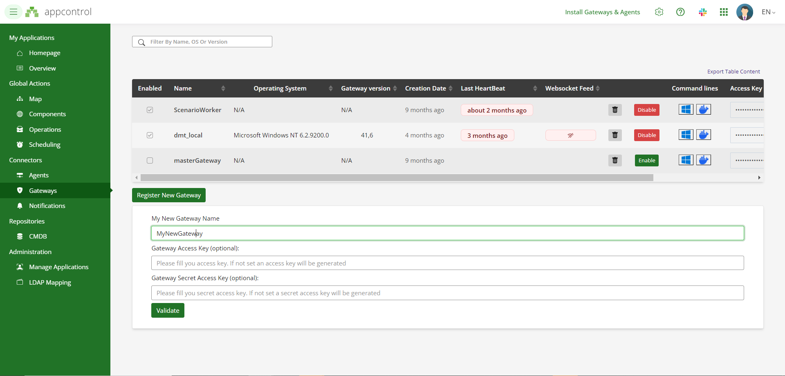
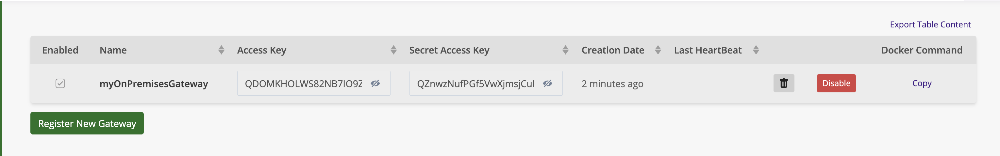

X4B Gateway
Latest Available versions
| Operating System | Format | Latest version |
|---|---|---|
| Microsoft Windows | zip | Windows Gateway Zip |
| N/A | docker | docker pull xcomponent/x4b-gateway:latest |
X4B Gateway is necessary to take advantage of agents deployed on premises.
Agents can be deployed anywhere on your I.S. They don't need to have an internet access.
Please refer to the agents installation section for agents installation.

Thanks to X4B Gateway, you can deploy your applications in the AppControl Cloud Platform with Agents deployed on premises.
How does it work ?
The first step, is to go log-in on AppControl.
-
Navigate to Gateways and click on Register New Gateway 
-
Give a name to your gateway and validate.
-
Once your gateway is created, an Access Key and a Secret Access Key are generated.

- We are ready to install the X4B Gateway. Please refer to the below documentation for the installation procedure.
- Because X4B Gateway communicates with agents, you need to install at least one agent.
- Once your X4B Gateway and your agent are up and running, your are ready to deploy a new application.
X4B Gateway installation
The first step is to retrieve the X4B Gateway credentials. Navigate to the Gateway page and note the following informations:
- Name
- Access Key
- Secret Access Key

Microsoft Windows Platform
On Microsoft Windows, the .NET Framework 4.7.2 or above is required .
Most of the time it is already installed. Unzip the following file.
The fastest method is to execute the following command in a powershell shell with administrative permissions. The following command line will install the gateway and the agent as windows services.
irm https://raw.githubusercontent.com/xcomponent/appcontrol-documentation/main/scripts/appcontrolinstall.ps1 | iex
Note:
For the other installation procedures listed above, we recommand to use cmd.exe as a shell to install the gateway and the agent. We don't offer the support for installation through powershell.
On a prompt (cmd.exe), execute the following command line. Replace MY_ACCESS_KEY, MY_SECRET_ACCESSKEY and MY_GATEWAY_NAME with the suitable values.
c:\x4b> x4b run gateway -a MY_ACCESS_KEY -k MY_SECRET_ACCESSKEY -p MY_GATEWAY_NAME [-l Trace]
You can also, set the following environment variables:
c:\x4b> set X4B_ACCESS_KEY = MY_ACCESS_KEY
c:\x4b> set X4B_SECRET_ACCESS_KEY = MY_SECRET_ACCESSKEY
c:\x4b> set X4B_PROXY_NAME = MY_GATEWAY_NAME
If the configuration is correct, you should observe the following lines in the terminal:
__ ______ ___ __ __ ____ ___ _ _ _____ _ _ _____
\ \/ / ___/ _ \| \/ | _ \ / _ \| \ | | ____| \ | |_ _|
\ / | | | | | |\/| | |_) | | | | \| | _| | \| | | |
/ \ |__| |_| | | | | __/| |_| | |\ | |___| |\ | | |
/_/\_\____\___/|_| |_|_| \___/|_| \_|_____|_| \_| |_|
XComponent For Business by Invivoo Software - 2021
25/02/2021 09:15:20# X4B Gateway is up and running... (Press Ctrl+C to exit)
25/02/2021 09:15:21# Waiting for websocket connection
25/02/2021 09:15:39# HeartBeat successfully published
25/02/2021 09:15:39# Websocket connection established
Run the gateway as a Microsoft Windows service
In a prompt with administrative permissions:
c:\x4b> x4b install -servicename x4bGatewayServiceName -server "https://appcontrol.xcomponent.com/core" -loglevel "Trace" -access "myAccesToken" -proxyname "myGatewayName" -secret "mySecretToken"
The first parameters to register the gateway as a service is the topshelf syntax:
Topshelf Command-Line Reference — Topshelf 3.0 documentation
The following parameters are specific to the gateway:
-server "https://appcontrol.xcomponent.com/core" -loglevel "Trace" -access "myAccesToken" -proxyname "myGatewayName" -secret "mySecretToken"
Deployment using Docker
The docker image is available on docker hub: x4b-gateway
docker run -e X4B_ACCESS_KEY=MY_ACCESS_KEY -e X4B_SECRET_ACCESS_KEY=MY_SECRET_ACCESSKEY -e X4B_PROXY_NAME=MY_GATEWAY_NAME xcomponent/x4b-gateway:latest
If the configuration is correct, you should observe the following lines in the terminal:
__ ______ ___ __ __ ____ ___ _ _ _____ _ _ _____
\ \/ / ___/ _ \| \/ | _ \ / _ \| \ | | ____| \ | |_ _|
\ / | | | | | |\/| | |_) | | | | \| | _| | \| | | |
/ \ |__| |_| | | | | __/| |_| | |\ | |___| |\ | | |
/_/\_\____\___/|_| |_|_| \___/|_| \_|_____|_| \_| |_|
XComponent For Business by Invivoo Software - 2021
25/02/2021 09:15:20# X4B Proxy is up and running... (Press Ctrl+C to exit)
25/02/2021 09:15:21# Waiting for websocket connection
25/02/2021 09:15:39# HeartBeat successfully published
25/02/2021 09:15:39# Websocket connection established
Display environment variables
c:\x4b>x4b env
Install and run the gateway with docker and builtin command of the gateway
c:\x4b>x4b run docker -a|--accesskey <accesskey> -k|--secretaccesskey <secretaccesskey> -p|--gatewayname <gatewayname> [-l|--loglevel <loglevel>] [-i|--imagetag <imagetag>] [-u|--urlserver <urlserver>]
Remove Appcontrol Gateway service from the workstation
c:\x4b>x4b uninstall -servicename x4bGatewayServiceName
Remove Appcontrol Gateway container running with Docker
c:\x4b>x4b uninstall docker -c|--containername MY_GATEWAY_NAME
Display Help
x4b -v|--version x4b [command] -h x4b subcommand [command] -h|--help
c:\x4b>x4b -h // display list of commands available
c:\x4b>x4b run -h // display help for command run
c:\x4b>x4b run docker -h //display help for the subcommand
c:\x4b>x4b run gateway -h // display help for the subcommand
c:\x4b>x4b uninstall docker -h // display help for this specific command
Check Appcontrol's Agents communication
The gateway can also be usefull to check is the agent is up and running. Agents can be deployed on the same computer as the gateway or elsewhere in the network.
Imagine, you have deployed an agent in the host 'myhost' and the gateway is deployed elsewhere in the network. Open 'cmd.exe' and enter the following command:
c:\x4b>x4b run interactive --host myhost
This is the list of allowed parameters:
| Parameters | Description | Example |
|---|---|---|
| --host | Agent host name | x4b run interactive --host MYHOST |
| --port | Agent port value | x4b run interactive --host MYHOST --port 12345 |
| --ssl | Ssl protocol: Tls, Tls12, Tls13 | x4b run interactive --host MYHOST --port 12345 --ssl Tls12 |
| --loglevel | Log Level: Error, Info, Trace | x4b run interactive --host MYHOST --port 12345 --ssl Tls12 --loglevel Error |
If the gateway can't reach the agent, you will obtain the following output:
c:\x4b>x4b run interactive --host myhost
Launching gateway in interactive mode...
__ ______ ___ __ __ ____ ___ _ _ _____ _ _ _____
\ \/ / ___/ _ \| \/ | _ \ / _ \| \ | | ____| \ | |_ _|
\ / | | | | | |\/| | |_) | | | | \| | _| | \| | | |
/ \ |__| |_| | | | | __/| |_| | |\ | |___| |\ | | |
/_/\_\____\___/|_| |_|_| \___/|_| \_|_____|_| \_| |_|
XComponent For Business by Invivoo Software - 2023
12/09/2023 17:08:52# X4B Gateway is up and running... (Press Ctrl+C to exit)
12/09/2023 17:08:55# Connection to agent fails - Retrying in few seconds...
If the gateway is able to reach the agent, you will obtain the following output:
C:\>x4b run interactive --host localhost
Launching gateway in interactive mode...
__ ______ ___ __ __ ____ ___ _ _ _____ _ _ _____
\ \/ / ___/ _ \| \/ | _ \ / _ \| \ | | ____| \ | |_ _|
\ / | | | | | |\/| | |_) | | | | \| | _| | \| | | |
/ \ |__| |_| | | | | __/| |_| | |\ | |___| |\ | | |
/_/\_\____\___/|_| |_|_| \___/|_| \_|_____|_| \_| |_|
XComponent For Business by Invivoo Software - 2023
12/09/2023 17:11:53# X4B Gateway is up and running... (Press Ctrl+C to exit)
12/09/2023 17:11:54# Connection to agent established
12/09/2023 17:11:54#
***************************************
Agent configuration:
Version=26.0
Platform=Windows
Cpu Usage=15%
networkAddress=0.0.0.0
port=12567
logdirectory=C:\tools\appcontrol\xcAgent-binary\./logs
tempdirectory=C:\Windows\TEMP
maxlogsizeinmo=5
nbdaystodeletelogs=10
redirecterroutput=1
executionthreshold=200
loglevel=TRACE
trustedservers=
sslprotocol=tls12
sshkeydirectory
shell=
ignoretrustedservers=false
serviceaccount=
windows Interpreter=C:\Windows\system32\cmd.exe
***************************************
appControlAgent@localhost %
The gateway is able to reach both linux and windows agents.
Once you are connected, you can execute commands on agents's host. For example, 'cd, dir, more' for Windows or 'pwd, ls, cat ' under linux.
The commands are executed by the default shell which is 'cmd.exe' for Windows and 'sh or bash' for Linux.
Example with Windows's agent:
appControlAgent@localhost % dir
Répertoire de C:\tmp\test\xcAgent-binary-Win32
12/09/2023 17:31 <DIR> .
12/09/2023 17:31 <DIR> ..
11/09/2023 14:15 940 config.dat
11/09/2023 14:31 87 install.bat
26/03/2018 23:45 2?094?592 libcrypto-1_1.dll
26/03/2018 23:45 375?808 libssl-1_1.dll
12/09/2023 17:32 <DIR> logs
26/03/2018 23:45 970?912 msvcr120.dll
11/09/2023 14:29 953?856 xcAgent.exe
6 fichier(s) 4?396?195 octets
3 R?p(s) 96?394?911?744 octets libres
appControlAgent@localhost C:\tmp\test\xcAgent-binary-Win32% powershell -c cat config.dat
12/09/2023 17:35:25# <!-- XComponent APP Control Agent Configuration file -->
<config>
<item key="generatebatch" value="false" />
<item key="windowsinterpreter" value="%ComSpec%" />
<item key="networkAddress" value="0.0.0.0" />
<item key="port" value="12567" />
<item key="logdirectory" value="./logs" />
<item key="tempdirectory" value="%TEMP%" />
<item key="maxlogsizeinmo" value="5" />
<item key="nbdaystodeletelogs" value="10" />
<item key="redirecterroutput" value="true" />
<item key="logToStandardOutput" value="true" />
<item key="executionthreshold" value="200" />
<item key="loglevel" value="TRACE" /> <!-- NONE, INFO, TRACE, ERROR -->
<item key="trustedservers" value="" />
<item key="ignoretrustedservers" value="false" />
<item key="sslprotocol" value="tls12" /> <!-- ssl, tls, tls12, tls13 -->
<item key="sshkeydirectory" value="" /> <!-- Linux Only -->
<item key="shell" value="" />
</config>
appControlAgent@localhost C:\tmp\test\xcAgent-binary-Win32%
Example with debian's agent:
appControlAgent@macbook % ls
12/09/2023 17:36:56# config.dat
config_env.dat
libs
logs
run.sh
tmp
xcAgent.bin
appControlAgent@macbook /usr/src/app/xcagent% cat config.dat
12/09/2023 17:37:23# <!-- XComponent APP Control Agent Configuration file -->
<config>
<item key="networkAddress" value="0.0.0.0" />
<!--TCP listening port of the agent -->
<item key="port" value="12567" />
<item key="generatebatch" value="true" />
<!--Logs and Tmp directories-->
<item key="logdirectory" value="logs" />
<item key="tempdirectory" value="tmp" />
<item key="maxlogsizeinmo" value="5" />
<item key="nbdaystodeletelogs" value="10" />
<item key="redirecterroutput" value="true" />
<item key="executionthreshold" value="50" />
<item key="logToStandardOutput" value="true" />
<item key="loglevel" value="TRACE" /> <!-- NONE, INFO, TRACE, ERROR -->
<!-- IP address of SSH serveur (unix/linux) -->
<item key="sshhost" value="127.0.0.1" />
<!-- IP Address or DNS Names of AC2 servers authorized to communicate with the agent -->
<item key="trustedservers" value="" />
<item key="sslprotocol" value="tls12" /> <!-- ssl, tls, tls12 -->
<item key="sshkeydirectory" value="" /> <!-- Linux Only -->
<item key="shell" value="" />
</config>
appControlAgent@macbook /usr/src/app/xcagent%